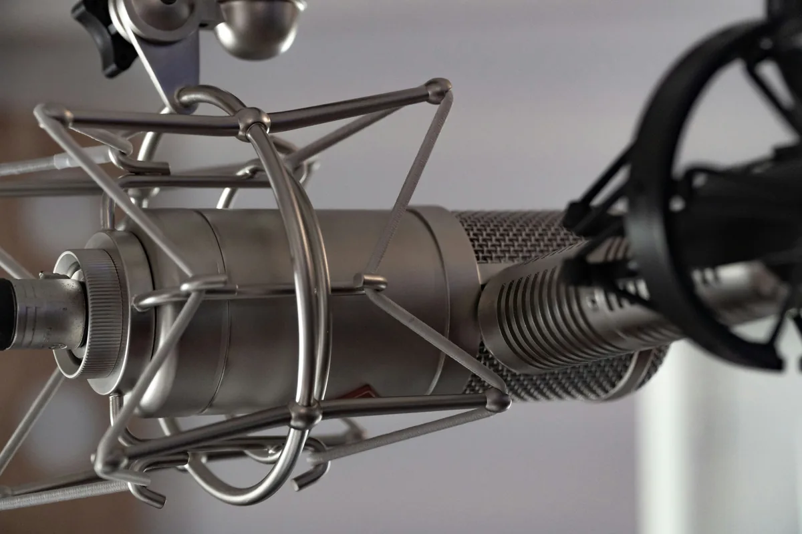

Wybór pierwszego mikrofonu jest trudny - rynek oferuje setki modeli w różnych cenach, a producenci prześcigają się w marketingowych obietnicach. Dobra wiadomość: do 500 zł można kupić mikrofon, który nada się zarówno do nagrywania wokalu, jak i do podcastu czy streamingu. Zła wiadomość: nie każdy tani mikrofon brzmi równie dobrze. W tym artykule pokazuję, na co zwracać uwagę i które konkretne modele warto rozważyć.
Rodzaje mikrofonów - co wybrać na start
Zanim przejdziesz do konkretnych modeli, musisz wiedzieć, z jakim typem mikrofonu masz do czynienia. Na rynku domowym dominują dwa rodzaje - pojemnościowe i dynamiczne - i każdy z nich nadaje się do czegoś innego.
Mikrofony pojemnościowe
Mikrofony pojemnościowe (ang. condenser) są wrażliwsze i lepiej oddają szczegóły nagrania - rejestrują barwę głosu, oddechy, sybilancję. To zaleta przy wokalu w cichym pomieszczeniu, ale wada, gdy nagrywasz w głośnym otoczeniu lub w niepotraktowanym akustycznie pokoju - mikrofon wychwyci każde echo i szum klimatyzacji. Większość modeli pojemnościowych wymaga zasilania phantom power (+48V), które dostarcza interfejs audio lub mikser.
Mikrofony dynamiczne
Mikrofony dynamiczne są mniej czułe i bardziej odporne na hałas otoczenia. Świetnie sprawdzają się przy głośnych źródłach (perkusja, gitary elektryczne), ale dobrze radzą sobie też przy wokalu i podcaście - szczególnie gdy nagrywasz w pokoju bez wyciszenia. Nie wymagają zasilania phantom power, więc można je podłączyć bezpośrednio do interfejsu lub mikropodłączone wzmacniacza. Dla początkujących nagrywających w nieuprzątnięcym pokoju to często lepszy wybór niż pojemnościowy.
Mikrofony USB
Mikrofony USB mają wbudowany przetwornik analogowo-cyfrowy i podłączają się bezpośrednio do komputera - bez interfejsu audio. To wygodne rozwiązanie dla podcasterów i streamerów, którzy nie planują rozbudowy zestawu. Jeśli jednak myślisz o nagrywaniu wokalu do muzyki i zakupie interfejsu w przyszłości, mikrofon USB może stać się zbędny - warto wtedy rozważyć od razu zestaw z interfejsem i mikrofonem XLR.
Na co zwracać uwagę przy wyborze
Specyfikacja techniczna mikrofonu to tylko część historii. Oto parametry, które realnie wpływają na jakość nagrania w warunkach domowych.
Charakterystyka kierunkowości
Większość mikrofonów do domu ma charakterystykę kardioidalną - rejestruje dźwięk z przodu, a odrzuca dźwięki z tyłu i boków. To dobry wybór zarówno do wokalu, jak i podcastu. Mikrofony bidirectionalne (ósemka) nadają się do wywiadów przy jednym stole - nagrywają dwie osoby po obu stronach mikrofonu. Omnidirectionalne (dookolne) rejestrują dźwięk ze wszystkich kierunków - rzadko pożądane w domowych warunkach akustycznych.
Samoszum (self-noise)
Samoszum to hałas generowany przez elektronikę samego mikrofonu. Mierzony w dB(A) - im niższy, tym lepiej. Dla wokalu i podcastu szukaj mikrofonów z samoszumem poniżej 20 dB(A). Wysokie wartości powyżej 25-30 dB(A) będą słyszalne przy cichszych nagraniach jako szum w tle.
Czułość i maksymalny poziom SPL
Czułość (sensitivity) mówi, jak silny sygnał wychodzi z mikrofonu. Ważniejszy parametr przy wyborze to maksymalny poziom ciśnienia akustycznego (SPL, Sound Pressure Level) - im wyższy, tym mikrofon lepiej radzi sobie z głośnymi źródłami bez zniekształceń. Do wokalu wystarczy wartość ok. 120-130 dB SPL.
Polecane modele do 500 zł
Poniżej kilka konkretnych propozycji z różnych kategorii. Ceny orientacyjne - mogą się różnić w zależności od sklepu i promocji.
Rode NT-USB Mini - mikrofon USB do podcastu i streamingu
Rode NT-USB Mini to kompaktowy mikrofon USB australijskiej firmy Rode, cenionej za jakość w segmencie pro-sumer. Charakterystyka kardioidalna, wbudowany monitoring przez słuchawki (zero-latency), prosta konstrukcja bez zbędnych przełączników. Dla podcasterów i streamerów, którzy chcą natychmiast zacząć nagrywać bez kupowania interfejsu - jeden z lepszych wyborów w tej kategorii cenowej. Dostępny w przedziale ok. 300-400 zł.
Audio-Technica AT2020 - klasyk pojemnościowy XLR
AT2020 to jeden z najczęściej rekomendowanych mikrofonów pojemnościowych dla początkujących na całym świecie - i nie bez powodu. Dobra czułość, niski samoszum (20 dB(A)), solidna obudowa, przewidywalne brzmienie. Wymaga interfejsu audio z phantom power. Jeśli masz już interfejs lub planujesz go kupić, AT2020 to pewny wybór w okolicach 350-450 zł. Nadaje się do wokalu, podcastu, nagrywania instrumentów akustycznych.
Samson Q2U - mikrofon hybrydowy USB/XLR
Samson Q2U to mikrofon dynamiczny z podwójnym wyjściem - USB i XLR jednocześnie. Możesz zacząć od podłączenia przez USB bez interfejsu, a gdy zainwestujesz w interfejs, przestawić się na XLR i dalej używać tego samego mikrofonu. Charakterystyka dynamiczna oznacza większą odporność na hałas pomieszczenia - dobry wybór, jeśli nagrywasz w nieuprzątnięcym pokoju. Cena w granicach 250-350 zł, w zestawie często dołączane są statyw biurkowy i kabel.
Behringer XM8500 - najtańsza opcja dynamiczna
Jeśli budżet jest naprawdę ograniczony, Behringer XM8500 to mikrofon dynamiczny XLR za ok. 60-100 zł, który w testach porównawczych zaskakuje jakością jak na swoją cenę. Dynamiczny, więc odporny na hałas. Wymaga interfejsu i ma wyższy samoszum niż droższe modele, ale przy tej cenie robi robotę. Dobry punkt startowy, jeśli chcesz sprawdzić, czy nagrywanie to coś dla ciebie, zanim zainwestujesz więcej.
Interfejs audio czy mikrofon USB - co kupić najpierw
To pytanie, które zadaje sobie większość osób zaczynających przygodę z nagrywaniem. Odpowiedź zależy od tego, co planujesz robić.
Jeśli twój cel to podcast lub streaming i nie planujesz nagrywania muzyki ani rozbudowy zestawu w najbliższym czasie - mikrofon USB jest wystarczający i prostszy w obsłudze. Kupujesz jeden produkt, podłączasz do komputera, nagrywasz.
Jeśli interesujesz się nagrywaniem wokalu do muzyki, planujesz podłączyć instrumenty lub myślisz o rozbudowie zestawu - lepiej od razu kupić interfejs audio i mikrofon XLR. Zestaw interfejs + mikrofon XLR za łącznie 400-500 zł (np. Focusrite Scarlett Solo + Behringer XM8500 albo drugi użytkowany mikrofon) da ci większe możliwości niż mikrofon USB w tej samej cenie i nie będziesz wymieniać sprzętu za rok.
Akcesoria - czego jeszcze będziesz potrzebować
Sam mikrofon to nie wszystko. Kilka prostych akcesoriów robi dużą różnicę w jakości nagrania.
Filtr pop
Ekran z siatki montowany przed mikrofonem, który eliminuje plosive - wybuchy powietrza przy spółgłoskach P i B. Niezbędny przy nagrywaniu wokalu i podcastu. Cena: od kilkunastu do kilkudziesięciu złotych. Brak filtra pop słychać natychmiast w nagraniu.
Statyw lub wysięgnik
Mikrofon musi stać nieruchomo w dobrej pozycji - statyw biurkowy lub ramię wysięgnikowe mocowane do biurka. Ramię wysięgnikowe jest wygodniejsze, bo pozwala ustawić mikrofon dokładnie przed ustami bez zajmowania miejsca na biurku. Modele do ok. 100-150 zł wystarczą na start.
Antywibracyjny uchwyt mikrofonowy
Tzw. spider mount lub shock mount - uchwyt amortyzujący drgania przenoszone przez statyw (np. stukanie o biurko). Szczególnie ważny przy mikrofonach pojemnościowych, które są wrażliwe na wibracje. Wiele mikrofonów jest sprzedawanych z takim uchwytem w zestawie.
Podsumowanie - jaki mikrofon do 500 zł wybrać
Wybór mikrofonu zależy przede wszystkim od tego, do czego go używasz i w jakich warunkach nagrywasz. Do podcastu i streamingu bez interfejsu - Rode NT-USB Mini lub Samson Q2U przez USB. Do wokalu muzycznego z interfejsem - Audio-Technica AT2020 lub inne pojemnościowe XLR w tej cenie. Jeśli pokój jest głośny lub nieakustyczny - mikrofon dynamiczny będzie bardziej wyrozumiały dla warunków nagrywania.

Zanim kupisz, przeczytaj też artykuł o nagrywaniu wokalu w domu - dowiesz się, jak ustawić mikrofon i przygotować pomieszczenie, żeby wyciągnąć maksimum z każdego modelu.
Najczęstsze pytania (FAQ)
Czy do podcastu potrzebuję interfejsu audio?
Nie - jeśli kupujesz mikrofon USB (np. Rode NT-USB Mini lub Samson Q2U w trybie USB), podłączasz go bezpośrednio do komputera i możesz od razu nagrywać. Interfejs audio jest potrzebny tylko przy mikrofonach ze złączem XLR.
Jaka jest różnica między mikrofonem pojemnościowym a dynamicznym?
Mikrofon pojemnościowy jest bardziej czuły i lepiej oddaje szczegóły głosu, ale wychwytuje też hałas pomieszczenia - sprawdza się w cichym, wyciszonym pokoju. Dynamiczny jest mniej czuły i odporniejszy na hałas otoczenia - lepszy wybór, gdy nagrywasz w zwykłym pokoju bez akustycznego traktowania.
Czy muszę kupować filtr pop osobno?
Zazwyczaj tak - większość mikrofonów w tej cenie nie ma filtra pop w zestawie. Warto go dokupić, bo kosztuje kilkanaście złotych, a bez niego wybuchy powietrza przy spółgłoskach P i B będą słyszalne na każdym nagraniu wokalu lub podcastu.
Czy Samson Q2U nadaje się do nagrywania wokalu muzycznego?
Tak, ale z zastrzeżeniami. Jako mikrofon dynamiczny brzmi nieco ciemniej niż pojemnościowy i mniej szczegółowo oddaje barwę głosu. Do podcastu i streamingu jest świetny, do wokalu muzycznego lepszym wyborem będzie mikrofon pojemnościowy jak Audio-Technica AT2020 - pod warunkiem, że masz interfejs audio i ciche pomieszczenie.
Jaki interfejs audio kupić razem z mikrofonem XLR za łącznie 500 zł?
Przy budżecie 500 zł na cały zestaw dobrym rozwiązaniem jest Focusrite Scarlett Solo (ok. 350-400 zł) plus Behringer XM8500 (ok. 80-100 zł). Jeśli możesz przeznaczyć trochę więcej, za Scarlett Solo i Audio-Technica AT2020 zapłacisz łącznie ok. 750-800 zł - to zestaw, który spokojnie wystarczy na kilka lat nagrywania.